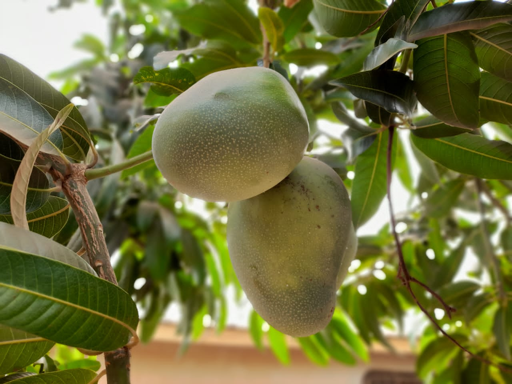

Fruit
Manguier
Mangifera indica — l'arbre de la saison sèche
- Cycle 3 à 5 ans avant la première production, puis arbre pérenne
- Mise à jour 2026-10-25
- Niveau de confiance partiel

Présentation et utilisations
Arbre fruitier pérenne : un investissement long mais qui produit pendant des décennies. La mangue ivoirienne a un marché local, régional et export (campagne de contre-saison).
Climat et sols
Sol profond, bien drainé, pH 5,5 à 7,5. Plein soleil. Résiste à la sécheresse une fois installé mais pas à l'engorgement.
Variétés adaptées
Kent, Keitt, Amélie (export) ; variétés locales pour le marché intérieur. Le choix dépend du débouché et de la période de production visée.
Calendrier cultural
Plantation en début de saison des pluies, greffé de préférence (production plus rapide et variété garantie). Floraison en saison sèche, récolte 3 à 5 mois après.
Préparation du terrain
Trou de 50 × 50 × 50 cm, mélange terre/compost, tuteur solide, protection contre les animaux.
Semis et plantation
Plantation de plants greffés de 60 à 80 cm, 8 à 10 m entre arbres (ou 5-6 m en haie fruitière taillée).
Entretien, fertilisation, irrigation
Désherbage du jeune âge, taille de formation les 3 premières années, irrigation pendant les 2 premières saisons sèches.
Engrais : quoi, combien, quand
Jeune arbre : construire la charpente (azote + phosphore). Arbre adulte : potassium pour le calibre et la qualité du fruit.
| Apport | Dose | Quand | Comment |
|---|---|---|---|
| OrganiqueFumier ou compost | 20 à 40 kg/pied/an | Début de saison des pluies | En couronne, enfoui légèrement |
| MinéralAzote (N) | 200 à 400 g/pied/an | En 2 fois (pluies) | En couronne |
| MinéralPhosphore (P2O5) | 150 à 300 g/pied/an | 1 fois par an | Enfoui en couronne |
| MinéralPotassium (K2O) | 300 à 600 g/pied/an | Avant la floraison et après la récolte | En couronne |
Doses par pied et par an ; enfouir en couronne, sous la projection de la frondaison.
Repères de fumure : ANADER
Maladies, ravageurs et prévention
Anthracnose (majeure en saison humide), mouche des fruits, oïdium à la floraison, cochenilles. Ramassage des fruits tombés, taille d'aération.
Récolte et post-récolte
Fruit récolté à maturité physiologique (épaulement rempli), il mûrit ensuite. Cueillir à la perche avec filet, sans choquer.
Conservation et transformation
7 à 15 jours selon la maturité et le froid disponible ; le fruit heurté pourrit vite.
Coûts, rendements et débouchés
Rentabilité à long terme : la première production arrive après 3 à 5 ans. Prévoir l'entretien des jeunes arbres sans revenu immédiat.
Tutoriel étape par étape
- Un sol profond, sans eau stagnante
Le manguier vit des décennies : vérifier le drainage avant de planter, pas après.
- Préparer un grand trou
50 cm de côté, compost mélangé à la terre de surface, tuteur solide contre le vent.
- Planter un arbre greffé
Le greffé produit plus tôt et donne la variété attendue. Point de greffe au-dessus du sol.
- Tailler les 3 premières années
Former 3 à 4 charpentières bien réparties : l'arbre récolté à la perche se conduit dès le jeune âge.
- Ramasser les fruits tombés
Ils abritent les mouches des fruits : ramasser et enfouir chaque semaine en saison.
- Récolter avant maturité
Épaule remplie, fruit encore ferme : il mûrit en 5 à 8 jours et supporte le transport.
Sources, vérification et limites
- Base de connaissances interne · knowledge/agronomie.md, knowledge/techniques_agricoles.md (consulté le 2026-10-25)
- ANADER · Appui-conseil arboriculture fruitière (consulté le 2026-10-25) — consulter
Limites de cette fiche. Rendements, prix et calendriers variétaux précis non documentés ici. L'anthracnose et la mouche des fruits peuvent annuler une récolte : prévoir la surveillance.
Dernière mise à jour : 2026-10-25. Les prix, rendements et calendriers locaux ne sont mentionnés que lorsqu'ils sont documentés ; dans le doute, la fiche le dit.